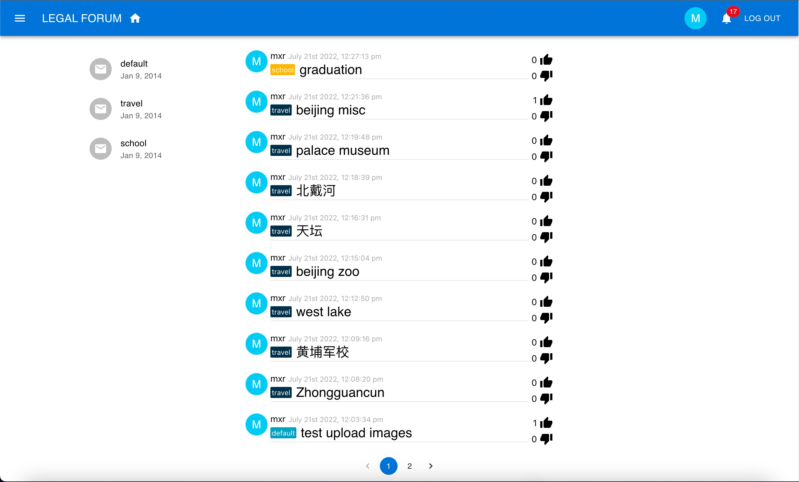
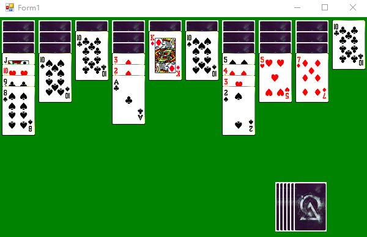
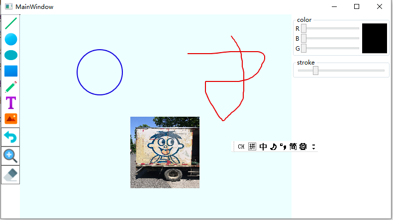
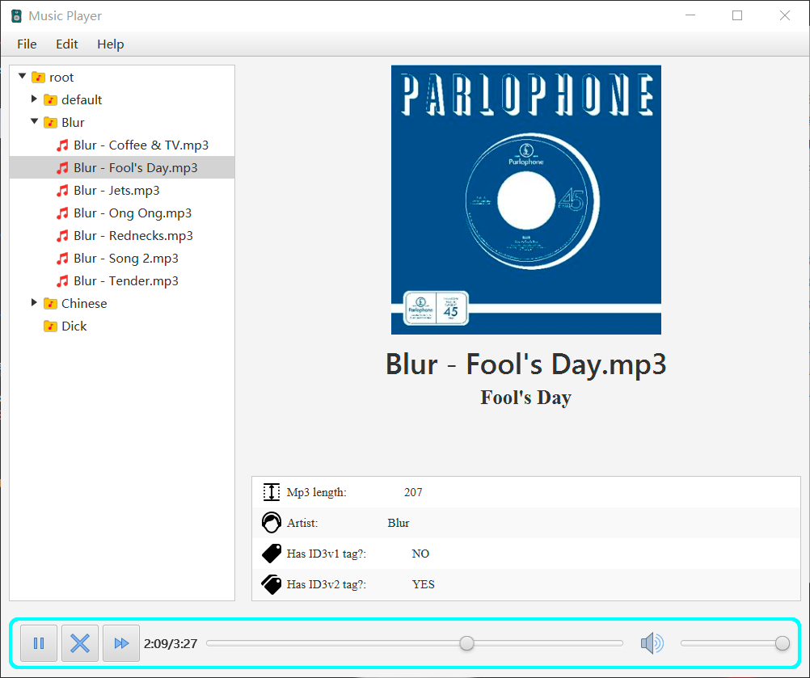
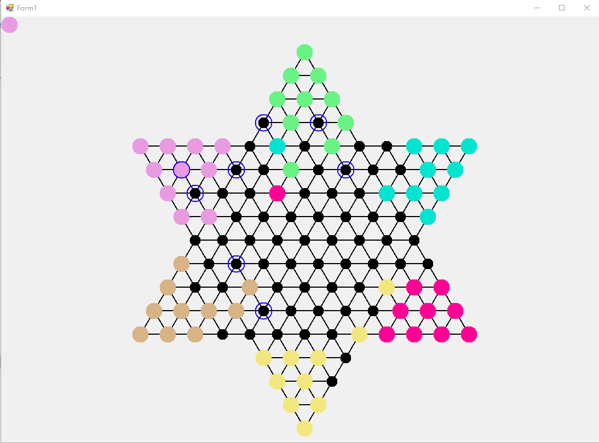
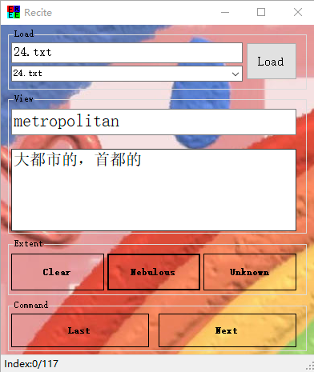
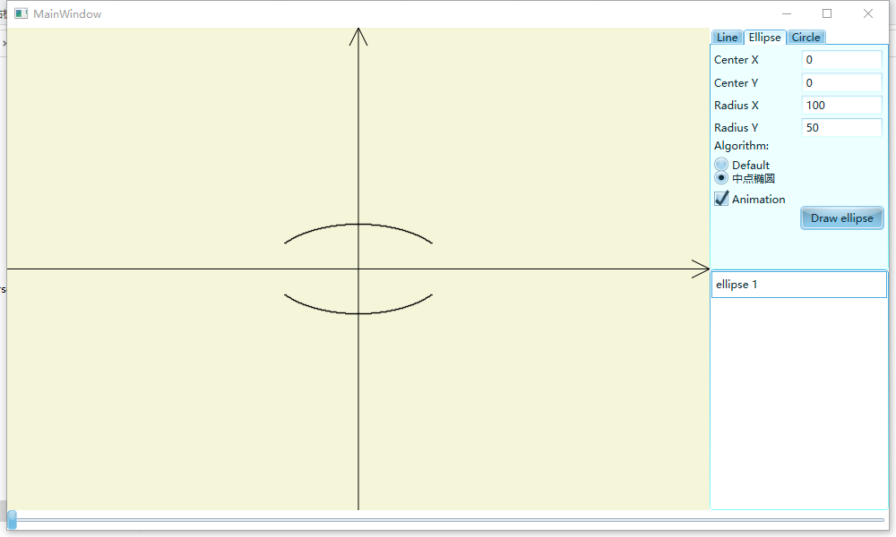

I am Miao Xinrun
I am an incoming MCS student of University of Virginia. I graduated from Xi'an Jiaotong University majoring in Computer Science and Technology at 2022.
I am an experienced full stack developer.
I like playing soccer, and I am a Madridista.
I also like reading books. My favorite novels include Journey to the End of the Night, Catch 22, The trial, 1984, and all books of Patrick Modiano.
I also like travel. I have travelled to Thailand, Singapore(though only one day) in 2015, and South Korea(though only to several places) in 2012. I am planning to travel to Europe this
winter.
Projects

Legal forum
A web forum implemented with React.js, Express, MySQL and TypeScript. Uses can post articles under different topics and comments under articles.
Features including posting files and images are also implemented.

Spyder Cards
A classic windows desktop game, Spyder cards, implemented with WinForm and C#.

Windows desktop painter
A Window desktop painter made with WPF and C#, with features implemented including drawing basic shapes, texts, pen lines and images, multiple selection, moving and deleting
of elements, and rollbacks of operations.

Music player
A local music player made with JavaFX, Java and XML.

Jump Chess
A windows jump chess game made with WinForm and C#.

GRE Words Reciter
A Windows desktop application made with WinForm and C# to help you memorize GRE words. The words are copied from the book of New Orientation.

Graphics Algorithm Animation
A Windows desktop application that visualize and animate the drawing of basic 2D shapes under different graphics algorithms using WPF and C#.
The algorithms include bresenham and DDA line drawing algorithm, middle point circle algorithm and middle point ellipse drawing algorithm.